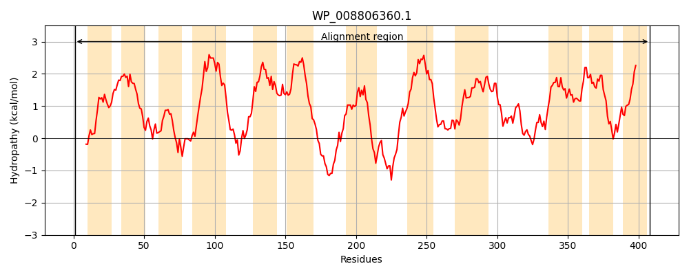
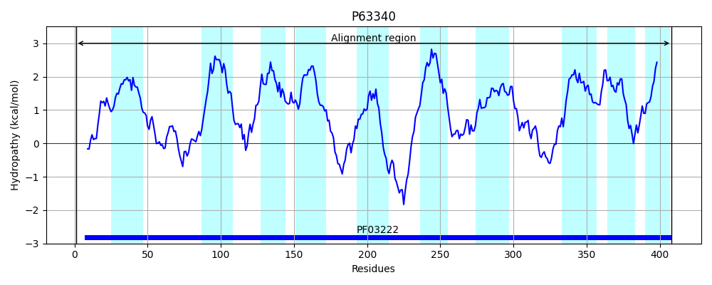
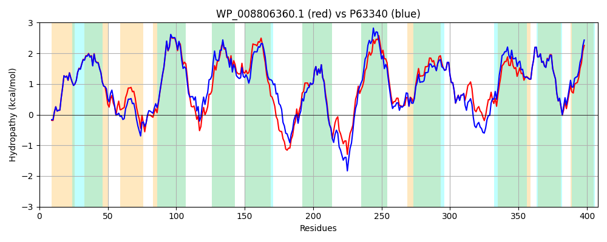

Hit Accession: P63340
Hit TCID: 2.A.42.2.5
Hit Description: gnl|BL_ORD_ID|11193 gnl|TC-DB|P63340|2.A.42.2.5 Inner membrane transport protein YqeG OS=Escherichia coli (strain K12) GN=yqeG PE=1 SV=1
Mach Len: 408
e:0.000000
Query TMS Count : 12
Hit TMS Count: 10
TMS-Overlap Score: 9.900000
Predicted Substrates:None
BLAST Alignment:
Score: 1680 , Bit scores: 651 bits, E-value: 0.0e+00, Alignment length: 408, Percentage identity: 80
Query: 1 MSKIWSKEETLWSFALYGTAVGAGTLFLPIQLGSAGAIVLFITALVAWPLTYWPHKALSQFILSANIAPGTGITGAVNHYYGKKIGNLITGLYFLAFFVVVLIYAVAITNSLAEQVAHRTPVTPTLRALLSLGVVLVLNLIFLMGRQVTIKVMGFLVFPLIACFLFLSLYLIRDWHPEHLTSQMQFSTHTLHQIWISIPVMVFAFSHTPIISTFAIDQQEKHGDLAMGKCKKIMKVAYTIICASVLFFVFSCLLAIPATYIESARDQGVTILSALSMVPGAPGWLAVTGIIVAVVAMSKSFLGTYFGVIEGASEIVKSSLGLVGVRKSRAFNRAMSILLVSAFTFAVCFINPNAISMIYAISGPLIAMILFIMPTLSTWLIPALKPYRSVGNAITLVVGLLCVSVMFF 408
MS IWSKEETLWSFALYGTAVGAGTLFLPIQLGSAGA+VLFITALVAWPLTYWPHKAL QFILS+ + G GITGAV HYYGKKIGNLIT LYF+AFFVVVLIYAVAITNSL EQ+A + +R L+SLGVVL+LNLIFLMGR TI+VMGFLVFPLIA FLFLS+YL+ W P+ LT+Q++F+ +TLHQIWISIPVMVFAFSHTPIISTFAID++EK+G+ AM KCKKIMKVAY IIC SVLFFVFSCLL+IP +YIE+A+++GVTILSALSM+P AP WL+++GIIVAVVAMSKSFLGTYFGVIEGA+E+VK++L VGV+KSRAFNRA+SI+LVS TF VC INPNAISMIYAISGPLIAMILFIMPTLST+LIPALKP+RS+GN ITL+VG+LCVSVMFF
Sbjct: 1 MSNIWSKEETLWSFALYGTAVGAGTLFLPIQLGSAGAVVLFITALVAWPLTYWPHKALCQFILSSKTSAGEGITGAVTHYYGKKIGNLITTLYFIAFFVVVLIYAVAITNSLTEQLAKHMVIDLRIRMLVSLGVVLILNLIFLMGRHATIRVMGFLVFPLIAYFLFLSIYLVGSWQPDLLTTQVEFNQNTLHQIWISIPVMVFAFSHTPIISTFAIDRREKYGEHAMDKCKKIMKVAYLIICISVLFFVFSCLLSIPPSYIEAAKEEGVTILSALSMLPNAPAWLSISGIIVAVVAMSKSFLGTYFGVIEGATEVVKTTLQQVGVKKSRAFNRALSIMLVSLITFIVCCINPNAISMIYAISGPLIAMILFIMPTLSTYLIPALKPWRSIGNLITLIVGILCVSVMFF 408 | Protein Hydropathy Plots: |
|---|
|  |  |
Pairwise Alignment-Hydropathy Plot:
|
|---|
|  |